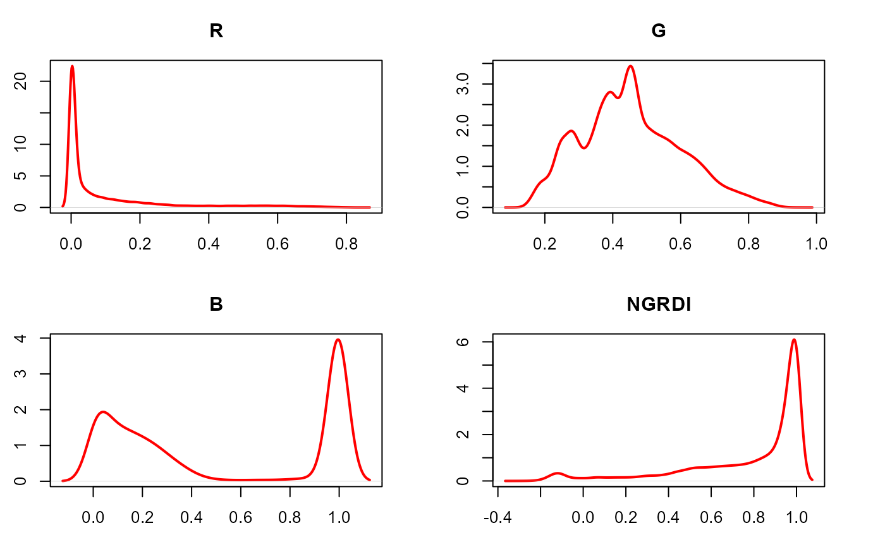
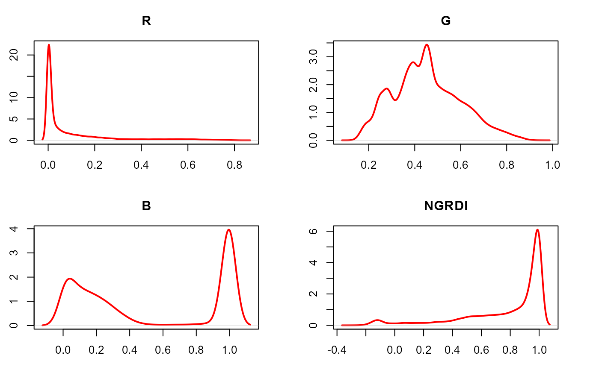

image_index() Builds image indexes using Red, Green, Blue, Red-Edge, and NIR bands.
Generates a raster or density plot of the index values computed with
image_index().
Arguments
- img
An image object.
- index
A character value (or a vector of characters) specifying the target mode for conversion to binary image. Use
pliman_indexes()or thedetailssection to see the available indexes. Defaults toNULL((normalized) Red, Green and Blue). One can also use "RGB" for RGB only, "NRGB" for normalized RGB, or "all" for all indexes. User can also calculate your own index using the bands names, e.g.index = "R+B/G".- resize
Resize the image before processing? Defaults to
resize = FALSE. Useresize = 50, which resizes the image to 50% of the original size to speed up image processing.- re
Respective position of the red-edge band at the original image file.
- nir
Respective position of the near-infrared band at the original image file.
- has_white_bg
Logical indicating whether a white background is present. If TRUE, pixels that have R, G, and B values equals to 1 will be considered as NA. This may be useful to compute an image index for objects that have, for example, a white background. In such cases, the background will not be considered for the threshold computation.
- plot
Show image after processing?
- nrow, ncol
The number of rows or columns in the plot grid. Defaults to
NULL, i.e., a square grid is produced.- parallel
Processes the images asynchronously (in parallel) in separate R sessions running in the background on the same machine. It may speed up the processing time when
imageis a list. The number of sections is set up to 70% of available cores.- workers
A positive numeric scalar or a function specifying the maximum number of parallel processes that can be active at the same time.
- verbose
If
TRUE(default) a summary is shown in the console.- ...
Additional arguments passed to
plot_index()for customization.- x
An object of class
image_index.- type
The type of plot. Use
type = "raster"(default) to produce a raster plot showing the intensity of the pixels for each image index ortype = "density"to produce a density plot with the pixels' intensity.
Value
A list containing Grayscale images. The length will depend on the number of indexes used.
A NULL object
Details
The following indexes are available in pliman.
RGB color space
RredGgreenBblueNRnormalized redR/(R+G+B).NGnormalized greenG/(R+G+B)NBnormalized blueB/(R+G+B)GBgreen blue ratioG/BRBred blue ratioR/BGRgreen red ratioG/RBIbrightness Indexsqrt((R^2+G^2+B^2)/3)BIMbrightness Index 2sqrt((R*2+G*2+B*2)/3)SCISoil Colour Index(R-G)/(R+G)GLIGreen leaf index Vis Louhaichi et al. (2001)(2*G-R-B)/(2*G+R+B)HIPrimary colours Hue Index (2*R-G-B)/(G-B)NDGRINormalized green red difference index (Tucker, 1979)(G-R)/(G+R)NDGBINormalized green blue difference index(G-B)/(G+B)NDRBINormalized red blue difference index(R-B)/(R+B)IR+G+BS((R+G+B)-3*B)/(R+G+B)LR+G+B/3VARIA Visible Atmospherically Resistant Index(G-R)/(G+R-B)HUEOverall Hue Indexatan(2*(B-G-R)/30.5*(G-R))HUE2atan(2*(R-G-R)/30.5*(G-B))BGIB/GGRAY0.299*R + 0.587*G + 0.114*BGRAY2((R^2.2+(1.5*G)^2.2+(0.6*B)^2.2)/(1+1.5^2.2+0.6^2.2))^1/2.2GLAI(25*(G-R)/(G+R-B)+1.25)CIColoration Index(R-B)/RSATOverhall Saturation Index(max(R,G,B) - min(R,G,B)) / max(R,G,B)SHPShape Index2*(R-G-B)/(G-B)RIRedness IndexR**2/(B*G**3)
HSB color space
DGCIDark Green Color Index, based on HSB color space60\*((G - B) / (max(R, G, B) - min(R, G, B)))CIE-Lab color space
L*: relative luminance(0.2126 * R + 0.7152 * G + 0.0722 * B)a*:0.55*( (R - (0.2126 * R + 0.7152 * G + 0.0722 * B)) / (1.0 - 0.2126))
When type = "raster" (default), the function calls plot_index()
to create a raster plot for each index present in x. If type = "density",
a for loop is used to create a density plot for each index. Both types of
plots can be arranged in a grid controlled by the ncol and nrow
arguments.
References
Nobuyuki Otsu, "A threshold selection method from gray-level histograms". IEEE Trans. Sys., Man., Cyber. 9 (1): 62-66. 1979. doi:10.1109/TSMC.1979.4310076
Author
Tiago Olivoto tiagoolivoto@gmail.com
Examples
library(pliman)
img <- image_pliman("soybean_touch.jpg")
image_index(img, index = c("R, NR"))
 # Example for S3 method plot()
library(pliman)
img <- image_pliman("sev_leaf.jpg")
# compute the index
ind <- image_index(img, index = c("R, G, B, NGRDI"), plot = FALSE)
plot(ind)
# Example for S3 method plot()
library(pliman)
img <- image_pliman("sev_leaf.jpg")
# compute the index
ind <- image_index(img, index = c("R, G, B, NGRDI"), plot = FALSE)
plot(ind)
 # density plot
plot(ind, type = "density")

# density plot
plot(ind, type = "density")
